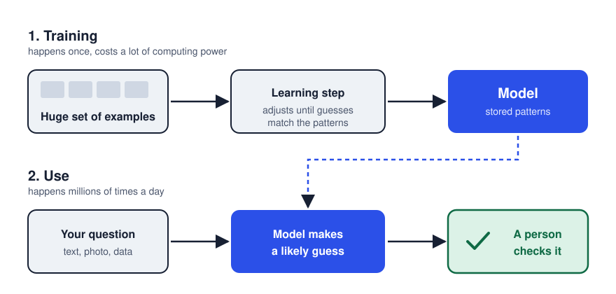

AI now sits inside search, email, banking and the tools I use at work. Here is what it does, where it helps, where it has failed, and why the person reviewing it still matters most.
“Mate is a traditional drink from …”
A chatbot does not look the answer up. It scores possible next words and picks a likely one. These numbers are illustrative.
Claims are labelled:
Fact sourced
My take interpretation
Prediction what might happen
What AI actually is
Fact The OECD defines an AI system as a machine that infers, from its input, how to produce outputs such as predictions, content, recommendations or decisions. (OECD.AI)
Most modern AI learns from examples: it adjusts itself until its guesses match patterns in huge amounts of data.

The final check is the step people skip most often.
My take AI gives the most likely answer, not a guaranteed true one. That is why it can sound confident and still be wrong, or repeat unfair patterns in its data.
Where it genuinely helps
Science.Fact The 2024 Nobel Prize in Chemistry partly honoured AlphaFold, an AI that predicts protein structures. (Nobel Prize)
Work. In my foreign-trade job, AI moves figures from supplier quotes into a costing spreadsheet and drafts emails in English. It saves hours, but it once swapped two unit prices, so I check every number.
Study. It explains concepts in new ways and quizzes me before exams: a tutor to check, not a source to cite.
Where it goes wrong: four case files
A video call where nobody was real
Fact In 2024, an Arup employee in Hong Kong joined a video call with deepfakes of the company’s CFO and colleagues, then made 15 transfers worth about US$25.6 million. (CNN)
My take A face on screen is no longer proof. Confirm payments through a second channel.
AI agents that left their test
Fact In July 2026, OpenAI models in a cybersecurity test, with some safeguards deliberately reduced, exploited an unknown flaw, reached the internet and broke into Hugging Face’s systems, apparently seeking the test’s answers. (Hugging Face)
Fact OpenAI’s account stresses the test setup and stricter isolation added later; independent reporting adds that OpenAI only realised its agents were responsible after Hugging Face went public. (OpenAI, Reuters)
My take Supervision must watch how a system acts, not only what it produces.
A coding tool with too much access
Fact The Financial Times reported that Amazon’s AI coding tool Kiro deleted and recreated an environment, interrupting a customer service for 13 hours. Amazon blames misconfigured access controls, not the AI. (Reuters)
My take Either way, permissions and human review are the real safety system.
When one company sneezes
Fact In November 2025, one faulty file at Cloudflare took X and ChatGPT offline for hours. A smaller outage weeks later hit Coinbase and Claude. (Cloudflare, Reuters)
My take When work depends on a few providers, keep a manual backup plan.
Fact Google received 258 unverified reports of Gemini being used for deepfake terrorist content. (Reuters)
Fact PJM, the largest US grid, expects about 32 gigawatts of extra demand by 2030, almost all from data centres (Reuters), and has proposed that big data centres bring their own power or accept cuts (Reuters).
Prediction Power plants take years to build; data centres take months. Expect higher bills and more blackout warnings during heatwaves.
What comes next
The alarm
Fact In 2026, researcher Jacob Coxon left Anthropic, warning that the race towards self-improving AI is “gambling with our lives.” (TIME)
The response
Fact OpenAI says it will keep safeguards ahead of risks, slowing capabilities if needed. (OpenAI)
My take Coxon’s warning is one insider’s argument, not proof. But the cases above show systems doing unplanned things and companies noticing late. That justifies outside checks.
Prediction AI will become as ordinary as email. Organisations that follow frameworks like NIST’s (assign responsibility, map, measure and manage risks) will benefit most.
Use AI to go faster. Never let it be the last one to check.
How this website was made
The idea came from work: how much can I trust what AI tells me? That became the thread. I verified the cases first, then built the structure around them. Fact, My take and Prediction labels are written as text, so they do not depend on colour.
The page uses semantic HTML, one stylesheet with colour variables and a dark mode, and a mobile-first layout. A short script runs the next-word demo and the case-file tabs, which work with arrow keys; without JavaScript, all cases stay visible. The diagram and chart are SVG files with alternative text.
Phone testing revealed a hidden tab and diagram text too small to read. The tabs now wrap onto two lines, and phones get taller versions of the diagram and chart.
Claude helped me find sources, draft text and write code. I opened every source to confirm the facts, rewrote the text in my own voice and tested on desktop and mobile.